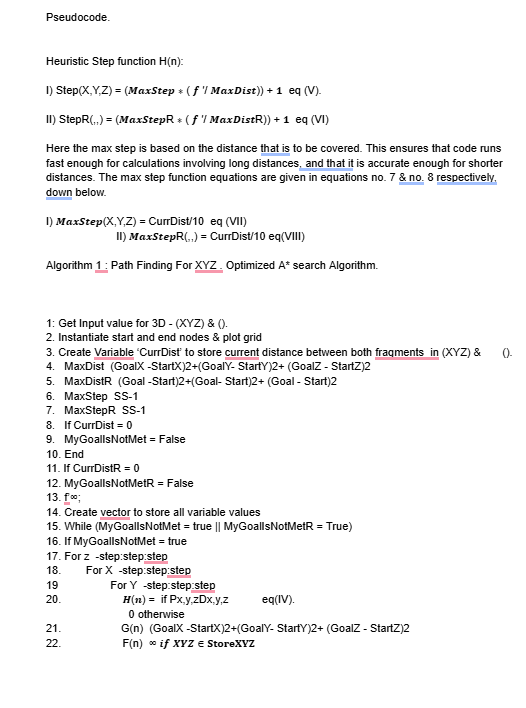
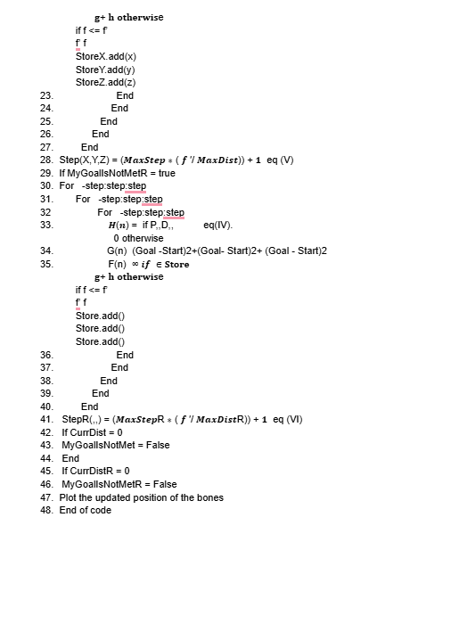

Can robots be useful tools during surgery?
Path planning for a 6-DOF fracture alignment robot.
Realigning a broken femur by hand is hard work for surgeons.
Femur fractures usually come from high impact collisions like car crashes. The femur is the strongest bone in the body and it's surrounded by dense muscle, so pulling and twisting the broken pieces back into place by hand is tiring and imprecise, and it's done under X-ray, which means radiation exposure for the team. Robossis is a robot built to help with exactly this step. My part was the algorithm side.
.png)
The bone has to move through 6 dimensions, so the robot needs a path planner that works in all 6.
The broken piece can be off in 3 directions and 3 rotations at once. We used a modified A* search over that 6D space: at every step it picks the move that keeps the total of "distance travelled so far" plus "distance left to the goal" as small as possible, and step sizes shrink as it gets closer so it's fast over long distances and still accurate near the end. The planned path is then used to guide the surgeon's hand through a haptic controller, rather than having the robot move on its own.


In simulation, the planned path brought the bone back to within 3 mm and 1.5°.
We tested it on a midshaft femur fracture where the broken piece was shifted 30 to 50 mm and rotated 5° to 15°. The planner returned a path in under 2 seconds.
.png)
References
- F. H. Alruwaili et al., "Haptic Guidance Approach for the Alignment of Femur Fractures Using Robot-Assisted Surgical System," Robossis Lab, Rowan University.
- M. S. Saeedi-Hosseiny et al., "A Surgical Robotic System for Long-Bone Fracture Alignment: Prototyping and Cadaver Study," IEEE Transactions on Medical Robotics and Bionics, vol. 4, no. 1, pp. 172–182, Feb. 2022.
- J. X. Zhao et al., "Evolution and Current Applications of Robot-Assisted Fracture Reduction: A Comprehensive Review," Annals of Biomedical Engineering, vol. 48, no. 1, pp. 203–224, Jan. 2020.